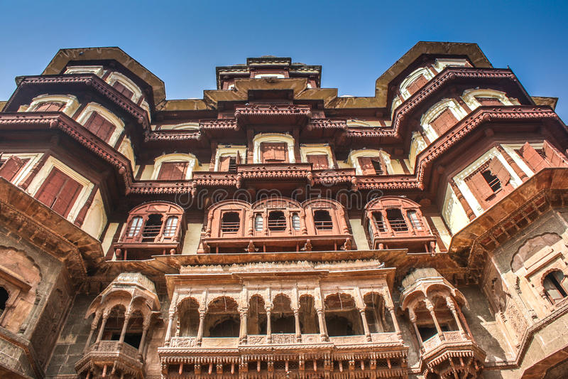
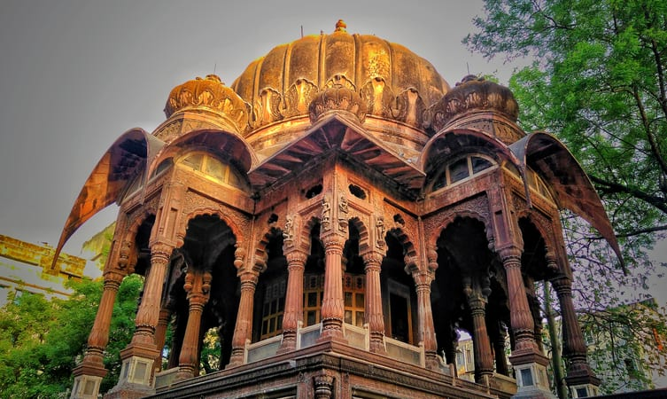
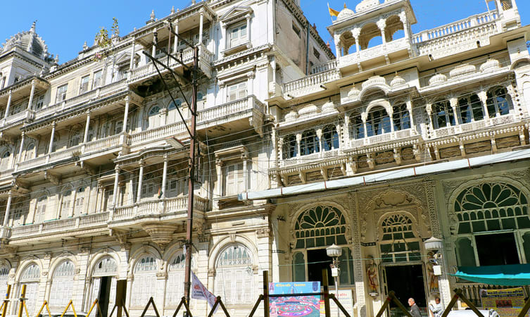
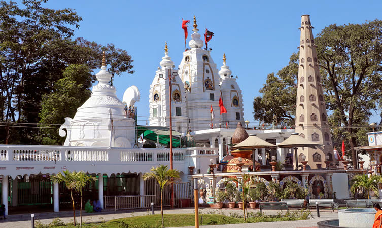

Welcome to Indore




Things to do in Indore
Heritage sites
Indore has a great history which can now be seen in the old architectures.
Food Zones
The city had always been a place for foodies, explore the food zones!
Shopping Malls
Visit the famous malls and experience well versed shopping.
Movies
Getting bored, Indore has movie theaters too.
Nature
Visit the Ralamandal Wildlife Sanctuary and many other waterfalls.